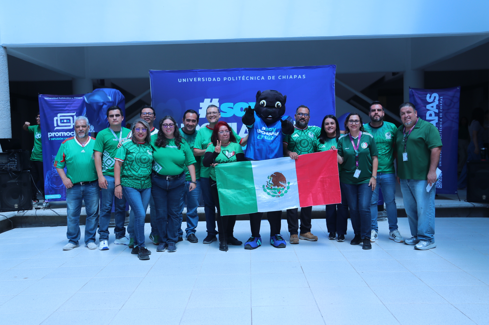
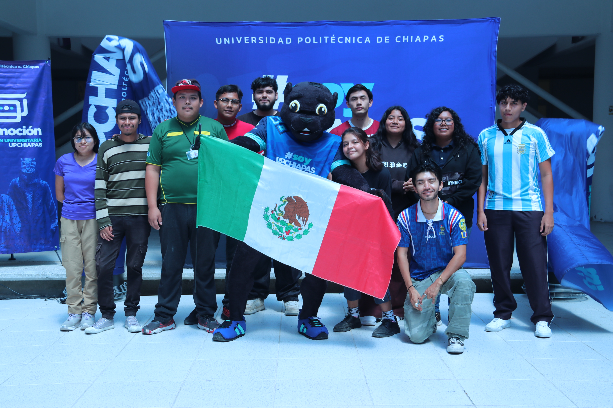

Descripción de la Carrera 
El egresado de la Ingeniería en Tecnologías de la Información e Innovación Digital cuenta con las competencias profesionales necesarias para su desempeño en el campo laboral, en el ámbito local, regional y nacional.
Perfil de Ingreso 
- Habilidades de pensamiento crítico: La capacidad de analizar, evaluar y resolver problemas de manera lógica y estructurada.
- Conocimientos básicos en matemáticas y ciencias: La comprensión de principios matemáticos y científicos que son fundamentales para la ingeniería.
- Competencias tecnológicas: Familiaridad con herramientas y plataformas digitales, así como una disposición para aprender y adaptarse a nuevas tecnologías.
- Innovación y creatividad: La habilidad para desarrollar ideas originales y aplicarlas en contextos prácticos.
Perfil de Egreso 
El egresado de la Ingeniería en Tecnologías de la Información e Innovación Digital se distingue por poseer las competencias profesionales esenciales que respaldan su desempeño con éxito en el dinámico entorno laboral, abarcando tanto el ámbito local como el regional y nacional. Este perfil integral no solo se ajusta a las demandas actuales del sector, sino que también anticipa y se adapta a las transformaciones y desafíos emergentes de la Licenciatura en Ingeniería en Tecnologías de la Información e Innovación Digital.
Campo Laboral 
- Desarrollador Front-End, Back-End o Full Stack.
- Desarrollador de aplicaciones móviles.
- Líder de proyectos de Tecnologías de la Información.
- Director de proyectos de innovación digital.
- Ingeniero de redes digitales.
- Ingeniero de cómputo en la nube y virtualización
- Ingeniero DevOps.
Competencias 
Desarrollar soluciones tecnológicas a través de lenguajes de programación estructurada y programación orientada a objetos, herramientas de desarrollo asistido de software, usabilidad y pruebas, fundamentos de redes de área local, sistemas operativos, medidas de seguridad informática para contribuir a la eficiencia y productividad en diferentes contextos con un enfoque de impulso al desarrollo social, ambiental y de economía socialmente responsable. Desarrollar soluciones tecnológicas multiplataforma de software web y móvil utilizando programación orientada a objetos, frameworks, bases de datos, estándares de calidad y diseño para resolver problemas del sector productivo, con un enfoque de inclusión, compromiso con la responsabilidad social, equidad social y de género, excelencia, vanguardia, innovación social e interculturalidad. Desarrollar soluciones innovadoras de integración de tecnologías de la información mediante metodologías y herramientas de seguridad informática, internet de las cosas, sistemas inteligentes y administración de proyectos; con base en las normas y estándares aplicables para atender las áreas de oportunidad, resolver las necesidades y optimizar los procesos y recursos de diversos sectores.